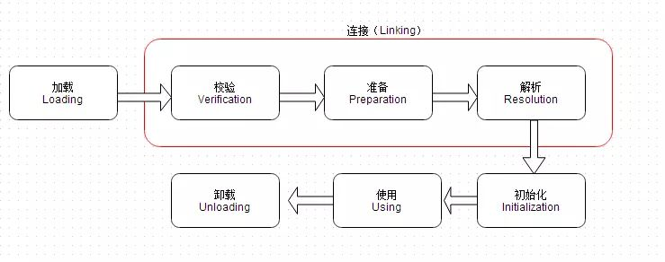
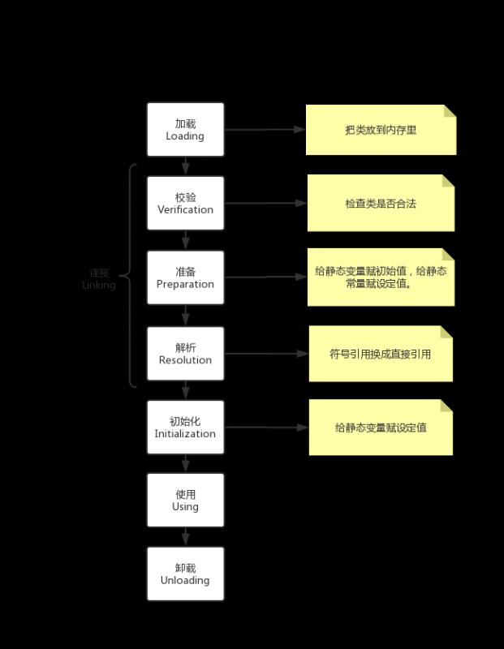
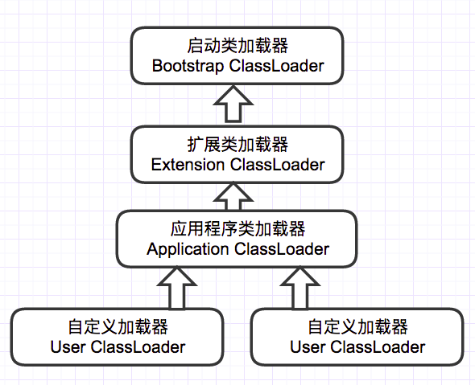

带着问题学习是最高效的，本次我们将尝试回答以下问题：
答案放在文章的最后，来不及看原理也可以直接跳到最后直接看答案。
类的生命周期相信大家已经耳熟能详，就像下面这样：

不过这东西总是背了就忘，忘了又背，就像马什么梅一样，对吧？
其实理解之后，基本上就不会再忘了。
加载主要做三件事：
总的来讲，这一步就是通过类加载器把类读入内存。需要注意的是，第三步虽然生成了对象，但并不在堆里，而是在方法区里。
连接分为三步，一般面试都比较喜欢问准备这一步。
顾名思义，检查Class文件的字节流中包含的信息是否符合当前虚拟机的要求。
这一步中将为静态变量和静态常量分配内存，并赋值。
需要注意的是，静态变量只会给默认值。比如下面这个：
public static int value = 123;此时赋给value的值是0，不是123。
静态常量（static final修饰的）则会直接赋值。比如下面这个：
public static final int value = 123;此时赋给value的值是123。
解析阶段就是jvm将常量池的符号引用替换为直接引用。
恩......啥是常量池？啥是符号引用？啥是直接引用？
常量池我们放在jvm内存结构里说。先来说下什么是符号引用和直接引用。
假设有一个Worker类，包含了一个Car类的run()方法，像下面这样：
class Worker{
......
public void gotoWork(){
car.run(); //这段代码在Worker类中的二进制表示为符号引用
}
......
}
在解析阶段之前，Worker类并不知道car.run()这个方法内存的什么地方，于是只能用一个字符串来表示这个方法。该字符串包含了足够的信息，比如类的信息，方法名，方法参数等，以供实际使用时可以找到相应的位置。
这个字符串就被称为符号引用。
在解析阶段，jvm根据字符串的内容找到内存区域中相应的地址，然后把符号引用替换成直接指向目标的指针、句柄、偏移量等，这之后就可以直接使用了。
这些直接指向目标的指针、句柄、偏移量就被成为直接引用。
类的初始化的主要工作是为静态变量赋程序设定的初值。
还记得上面的静态变量吗：
public static int value = 123;经过这一步，value的值终于是123了。
总结如下图：

Java虚拟机规范中严格规定了有且只有五种情况必须对类进行初始化：
除了以上这五种情况，其他任何情况都不会触发类的初始化。
比如下面这几种情况就不会触发类初始化：
在上面咱们曾经说到，加载阶段需要“通过一个类的全限定名来获取描述此类的二进制字节流”。这件事情就是类加载器在做。
jvm自带三种类加载器，分别是：
他们的继承关系如下图：

双亲委派机制工作过程如下：
当前ClassLoader首先从自己已经加载的类中查询是否此类已经加载，如果已经加载则直接返回原来已经加载的类。每个类加载器都有自己的加载缓存，当一个类被加载了以后就会放入缓存，等下次加载的时候就可以直接返回了。
当前classLoader的缓存中没有找到被加载的类的时候，委托父类加载器去加载，父类加载器采用同样的策略，首先查看自己的缓存，然后委托父类的父类去加载，一直到bootstrp ClassLoader.
当所有的父类加载器都没有加载的时候，再由当前的类加载器加载，并将其放入它自己的缓存中，以便下次有加载请求的时候直接返回。
为啥要搞这么复杂？自己处理不好吗？
双亲委派的优点如下：
“双亲委派”机制只是Java推荐的机制，并不是强制的机制。
比如JDBC就打破了双亲委派机制。它通过Thread.currentThread().getContextClassLoader()得到线程上下文加载器来加载Driver实现类，从而打破了双亲委派机制。
至于为什么，以后再说吧。
现在，我们可以回答文章开头提出的问题了。尽量在理解的基础上回答，不需要死记硬背。
什么是类的加载？
JVM把通过类名获得类的二进制流之后，把类放入方法区，并创建入口对象的过程被称为类的加载。经过加载，类就被放到内存里了。
哪些情况会触发类的初始化？
类在5种情况下会被初始化：
第一，假如这个类是入口类，他会被初始化。
第二，使用new创建对象，或者调用类的静态变量，类会被初始化。不过静态常量不算。
第三，通过反射获取类，类会被初始化
第四，如果子类被初始化，他的父类也会被初始化。
第五，使用jdk1.7的动态语言支持时，调用到静态句柄，也会被初始化。
讲一下JVM加载一个类的过程
同问题1。不过这里也可以问下面试官是不是想问类的生命周期。如果是问类的生命周期，可以回答有”加载、连接、初始化、使用、卸载“五个阶段，连接又可以分为”校验、准备、解析“三个阶段。
什么时候会为变量分配内存？
在准备阶段为静态变量分配内存。
JVM的类加载机制是什么？
双亲委派机制，类加载器会先让自己的父类来加载，父类无法加载的话，才会自己来加载。
双亲委派机制可以打破吗？为什么
可以打破，比如JDBC使用线程上下文加载器打破了双亲委派机制。原因是JDBC只提供了接口，并没有提供实现。这个问题可以再看下引用文献的内容。